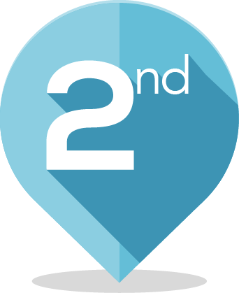

Publications Interactive track

@article{DAVIS2018-Interactive-1st,
author = {S. Wug Oh, J. Lee, N. Xu, S. Joo Kim},
title = {Fast User-Guided Video Object Segmentation by Deep Networks},
journal = {The 2018 DAVIS Challenge on Video Object Segmentation - CVPR Workshops},
year = {2018}
}

@article{DAVIS2018-Interactive-2nd,
author = {M. Najafi, V. Kulharia, T. Ajanthan, P. H. S. Torr},
title = {Similarity Learning for Dense Label Transfer},
journal = {The 2018 DAVIS Challenge on Video Object Segmentation - CVPR Workshops},
year = {2018}
}
Publications Semi-Supervised track
@article{DAVIS2018-Semi-Supervised-1st,
author = {J. Luiten, P. Voigtlaender, B. Leibe},
title = {PReMVOS: Proposal-generation, Refinement and Merging for the DAVIS Challenge on Video Object Segmentation 2018},
journal = {The 2018 DAVIS Challenge on Video Object Segmentation - CVPR Workshops},
year = {2018}
}
@article{DAVIS2018-Semi-Supervised-2nd,
author = {X. Li, C. Change Loy},
title = {Video Object Segmentation with Joint Re-identification and Attention-Aware Mask Propagation},
journal = {The 2018 DAVIS Challenge on Video Object Segmentation - CVPR Workshops},
year = {2018}
}

@article{DAVIS2018-Semi-Supervised-3rd,
author = {S. Xu, L. Bao, P. Zhou},
title = {Class-Agnostic Video Object Segmentation without Semantic Re-Identification},
journal = {The 2018 DAVIS Challenge on Video Object Segmentation - CVPR Workshops},
year = {2018}
}

@article{DAVIS2018-Semi-Supervised-4th,
author = {P. Guo, L. Zhang, H. Zhang, X. Liu, H. Ren, Y. Zhang},
title = {Adaptive Video Object Segmentation with Online Data Generation},
journal = {The 2018 DAVIS Challenge on Video Object Segmentation - CVPR Workshops},
year = {2018}
}
@article{DAVIS2018-Semi-Supervised-5th,
author = {A. Khoreva, R. Benenson, E. Ilg, T. Brox, B. Schiele},
title = {Lucid Data Dreaming for Video Object Segmentation},
journal = {The 2018 DAVIS Challenge on Video Object Segmentation - CVPR Workshops},
year = {2018}
}

@article{DAVIS2018-Semi-Supervised-6th,
author = {M. Tran, V. Ton-That, T. Le, K. Nguyen, T. V. Ninh, T. Le, V. Nguyen, T. V. Nguyen, M. N. Do},
title = {Context-based Instance Segmentation in Video Sequences},
journal = {The 2018 DAVIS Challenge on Video Object Segmentation - CVPR Workshops},
year = {2018}
}

@article{DAVIS2018-Semi-Supervised-7th,
author = {A. Lin, Y. Chou, T. Martinez},
title = {Flow Adaptive Video Object Segmentation},
journal = {The 2018 DAVIS Challenge on Video Object Segmentation - CVPR Workshops},
year = {2018}
}

@article{DAVIS2018-Semi-Supervised-8th,
author = {J. Sun, D. Yu, Y. Li, C. Wang},
title = {Mask Propagation Network for Video Object Segmentation},
journal = {The 2018 DAVIS Challenge on Video Object Segmentation - CVPR Workshops},
year = {2018}
}

@article{DAVIS2018-Semi-Supervised-9th,
author = {V.Petrosyan, O. {\"O}rnsberg, A. Proutiere},
title = {Video Object Segmentation via Tracking Edges and Classifying Segments},
journal = {The 2018 DAVIS Challenge on Video Object Segmentation - CVPR Workshops},
year = {2018}
}

@article{DAVIS2018-Semi-Supervised-10th,
author = {F. Lattari, M. Ciccone, M. Matteucci, J. Masci, F. Visin},
title = {ReConvNet: Video Object Segmentation with Spatio-Temporal Features Modulation},
journal = {The 2018 DAVIS Challenge on Video Object Segmentation - CVPR Workshops},
year = {2018}
}